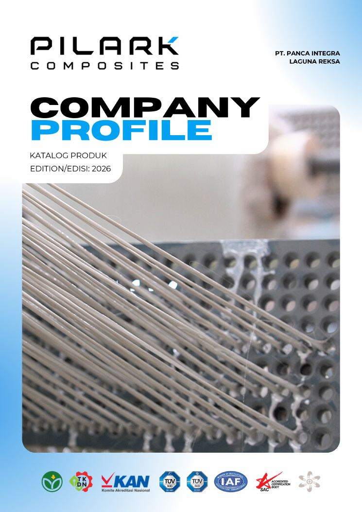
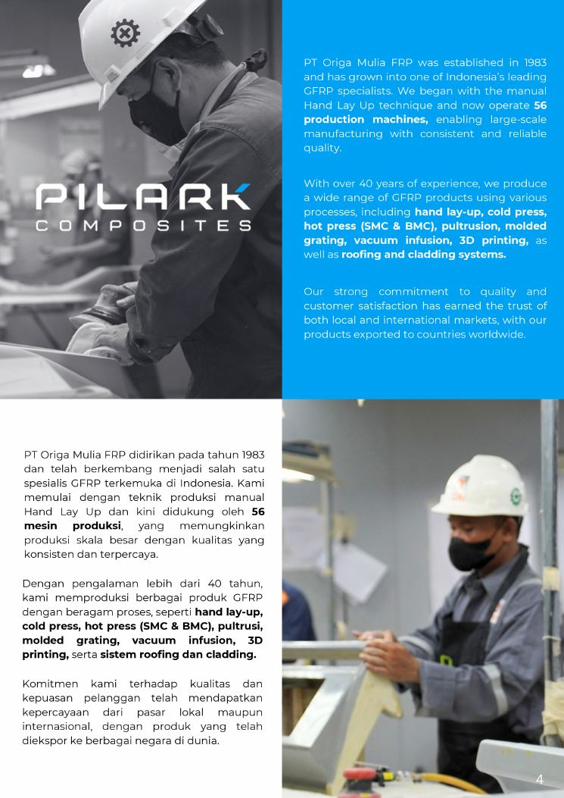
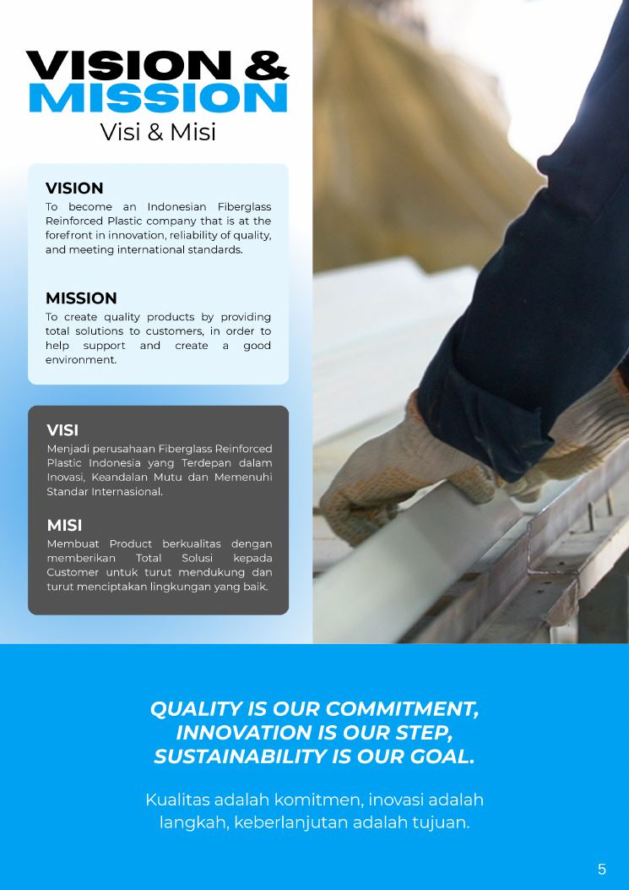

01
Lightweight
Easier to transport and install, reducing labor time and handling effort.
Fiberglass Reinforced Polymer solutions for industrial, residential, commercial and infrastructure applications — engineered around durability, corrosion resistance, strength and long-term performance.


PILARK Composites — PT. Panca Integra Laguna Reksa — positions itself as an Indonesian Fiberglass Reinforced Plastic (FRP) solutions provider for industrial, residential and commercial applications.
The 2026 Company Profile describes group experience in FRP manufacturing since 1983 and capabilities including hand lay-up, cold press, hot press, molded grating, vacuum infusion, 3D printing, and roofing & cladding systems.
Vision. To become an Indonesian Fiberglass Reinforced Plastic company that is at the forefront in innovation, reliability of quality, and meeting international standards.
Mission. To create quality products by providing total solutions to customers in order to help support and create a good environment.
Innovation is our step. Sustainability is our goal.

GFRP is presented in the Company Profile as a composite material engineered for demanding environments, offering lower weight, corrosion resistance and long service performance.
Easier to transport and install, reducing labor time and handling effort.
Suitable for electrical applications and high-risk areas where conductivity is a concern.
Maintains performance under long-term sun exposure with suitable formulation.
Can be formulated to help slow flame spread and improve safety performance.
Designed for humid, chemical, salt and other corrosive environments.
High strength-to-weight ratio for reliable structural use and long service life.
Non-metal material reduces the risk associated with theft of conventional metal components.
Reduced repainting and maintenance needs can lower long-term maintenance costs.
The 2026 catalog covers structural, access, cable management, reinforcement, drainage and wastewater solutions.
The catalog shows applications across industrial and commercial environments, while the product portfolio also supports infrastructure, utility and residential needs.
Manufacturing, chemical, mining, power, wastewater and other facilities where corrosion resistance, non-conductivity and durability matter.
Building, parking, public facilities, swimming pool and commercial access applications.
Drainage, utility, bridge, walkway, access and public infrastructure solutions.
Drainage, septic tank and access solutions for residential environments.
The Company Profile describes services intended to ensure GFRP projects meet project needs, field conditions and quality standards.
Guidance and solutions regarding the right type of GFRP product for project needs.
Design, drawing and site survey support so plans match field conditions.
Custom GFRP fabrication services with attention to precision, quality and efficiency.
Assistance and supervision during installation to ensure results comply with quality standards.
The 2026 Company Profile highlights quality systems and testing, including ISO 9001, ISO 14001 and SMK3, alongside TKDN/local-content support and Ecolabel sustainability certification.
Use the certificate gallery in the company profile and catalog as the source record for current credentials.
The Company Profile presents HI-GRID, O-LINE and O-MAX as focused product brands within the group ecosystem.
Industrial flooring and access-cover products such as molded grating, pultruded grating and manhole covers.
Utility and construction systems including cable trays, cable ladders, profiles, drainage, rebar, poles and handrail.
Waste-treatment and specialized products including individual and communal septic tank systems.
The catalog contains dimensional tables, load-capacity data, mechanical properties, installation diagrams and material comparisons across the product range.
FRP grating and cable systems include load tables and test information. GFRP profiles, handrails and rebar include mechanical-property/specification tables.
The catalog compares FRP/GFRP against steel, aluminium, timber and concrete/other conventional materials for selected applications.
Selected products include installation diagrams and assembly sequences, including grating, manhole covers, cable systems and septic tanks.
Where the catalog does not prescribe a project-specific configuration, use consultation and engineering services to match field conditions and project requirements.
Keep the complete Company Profile and Catalog as your technical reference.
Click any page to open it in a larger view. Product cards above link back to their source catalog page.
The 2026 materials list clients by industry sector including agriculture, automotive, building, chemical, engineering & contractor, factory, fertilizer, maritime, mining, power plant, pulp & paper, recreation, resources, telecommunication, transportation and water treatment.
AgricultureEvans Group · Siwi Agro Asia Crop Tbk · Wiratama Indonesia Group · and others listed in the 2026 client section.
AutomotiveEvolution Tyres and related manufacturing clients.
BuildingProject and building-sector clients listed in the Company Profile.
ChemicalChemical-sector clients listed in the Company Profile.
Engineering & ContractorMultiple engineering and contractor organizations across Indonesia.
FactoryManufacturing and industrial-facility clients.
FertilizerFertilizer and process-industry clients.
MaritimeMarine and shipyard-related clients.
MiningMining-sector clients.
Power PlantPower-generation clients.
Pulp & PaperPulp and paper industry clients.
RecreationRecreation and public-facility clients.
ResourcesResource and industrial clients.
TelecommunicationTelecommunication-sector clients.
TransportationTransportation-sector clients.
Water TreatmentWater-treatment clients.
Consultasikan kebutuhan produk, spesifikasi, custom fabrication, engineering, atau aplikasi GFRP untuk proyek Anda.